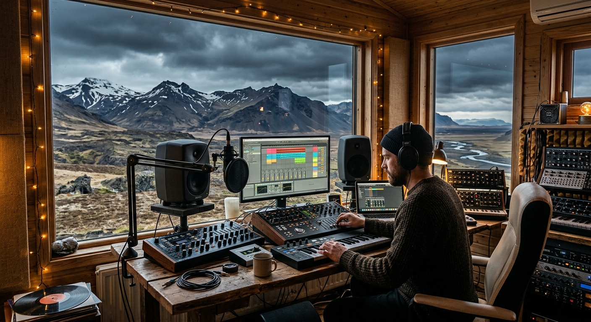

Veturmusic
Revolutionizing Music Distribution via Automated Workflows and Agile Leadership
Project Brief
Veturmusic is a centralized distribution hub designed for the Icelandic music market. The platform bridges the gap between local music creators and global Streaming Service Providers (DSPs). By integrating the Label Grid API, the application automates the complex process of metadata delivery and track distribution.
Artists gain a high-fidelity analytics dashboard to track market performance, while administrators manage the full content flow across the territory through a powerful, centralized engine.

Management & Strategy
The PM PerspectiveAgile Environment & Kanban
Implemented a structured Agile environment using a granular Kanban system that defined every stage of the development lifecycle — eliminating scope creep and keeping the team focused on high-value delivery.
Stakeholder Communication
As the primary point of contact for clients, I managed project scoping and expectation setting effectively, allowing the development team to focus on technical execution without interruption.
The Result
A 25% increase in team delivery speed — advanced stretch features such as market filtering were included well ahead of the initial deadline.

UX & Product Design
The Design PerspectiveThe Artist Portal
Focused on a Progressive Disclosure approach — surfacing only the tools artists need at each stage of their journey. The portal was designed to feel intuitive from day one, reducing onboarding friction and accelerating time-to-first-release.
Design Systems
Developed a comprehensive component library used across the entire platform — ensuring visual consistency, faster handoff to engineering, and a scalable foundation for future product expansion.
Accessibility (WCAG)
Led the UI/UX efforts to ensure full WCAG compliance — auditing contrast ratios, keyboard navigation, and screen reader compatibility across all artist-facing interfaces.


The Outcome
Efficiency Metrics
+25% Delivery Velocity — By implementing a granular Agile/Kanban environment, we optimized the sprint cycle, allowing for the inclusion of additional stretch features (like advanced performance insights) ahead of the initial deadline.
20% Optimized Handoff — Developed a standardized component library that reduced communication friction between design and development, cutting handoff time by an estimated 20%.
UX & User Success
Simplified Release Wizard — Replaced a manual, error-prone process with a step-by-step metadata wizard, ensuring 100% of releases meet global platform standards on the first attempt.
Reduced Cognitive Load — Streamlined the artist's journey from track upload to distribution tracking, moving from a fragmented system to a unified desktop-class web experience.
Scalable Architecture — Built a user-centered design system capable of supporting Vetur's growth from a local Icelandic niche to a globally scalable SaaS platform.
Strategic Impact
Global Integration
Transformed complex Label Grid API requirements into a "one-click" distribution flow, enabling Icelandic artists to sync music instantly with Spotify, Apple Music, and TikTok.
+25% Delivery Velocity
Granular Agile/Kanban optimization allowed advanced stretch features to ship ahead of the initial deadline.
Promoted to Project Manager
Recognition for successfully translating stakeholder business goals into a high-performance technical backlog and leading the full product lifecycle.